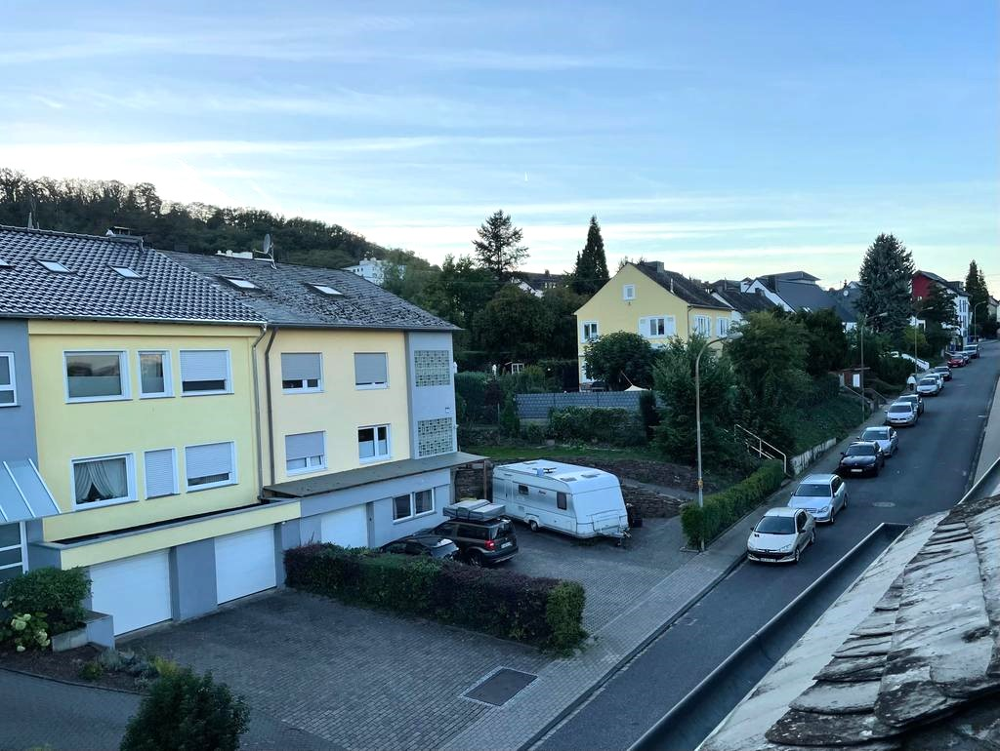
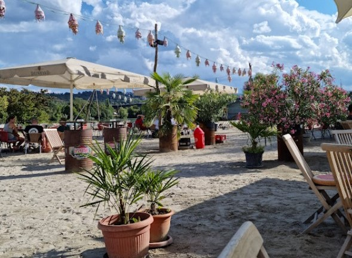

Unsere Unterkunft befindet sich im Koblenzer Stadtteil Metternich, eine sehr nette und ruhige Nachbarschaft. Nur in wenigen Schritten erreichen Sie die Universität Koblenz, wo sich auch die nächste ÖPNV-Haltestelle befindet. Mit dem Bus gelangen Sie in einer 10-mimütige-Fahrt in die Innenstadt. Ein öffentlicher Parkplatz erreichen Sie in 5 Minuten Fußweg.
Koblenz Metternich ist der perfekte Ort für Wassersportliebhaber. Egal ob Kanu, Kayak, Surfen oder Yacht fahren. Der Fluss Mosel und der Rhein ist nur in wenigen Minuten zu erreichen. Ebenso nah ist das Wassersportverein Koblenz Metternich und das Wassersportzentrum Grühn. Hier fehlt es nicht an Action!
An heißen Sommertagen ist der Stattstrand ein super beliebter Ort zum Entspannen. Dort erwarten Sie erfrischende Getränke und fantastische Kulinaritäten. Erleben Sie Ihren Strandurlaub in unmittelbarer Nähe!
